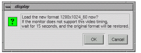
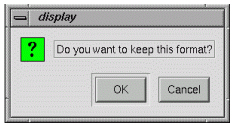
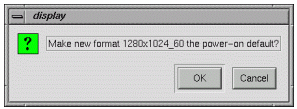
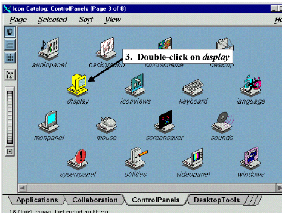
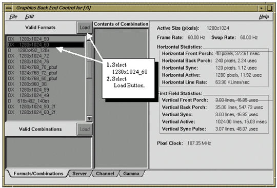

Operating Documentation
Direction 5440001-3, Rev# 6
Signa HDxt Service Methods
Module Version 1.0, Version Date 5/3/07
Operating Documentation |
| Required Persons | Preliminary Reqs | Procedure | Finalization |
|---|---|---|---|
| 1 |
To permanently set the frequency rate to 60Hz and Resolution to 1280 X1024:
Open a C-shell
Switch to root owner (Type: su<Enter> password: operator<Enter>).
Type: chkconfig fixed72hz off
Type: toolchest& (Refer to Illustration 4)
Click on [Find ]-> [Control Panels] (Refer to Illustration 5)
Click on [Display] to open this icon. (Refer to Illustration 6)
Select 1280x1024_60 selection (Refer to Illustration 6)
Click on [load] (Refer to Illustration 6)
Click on [OK] in the following pop-up.
Illustration 1: DISPLAY POP-UP 1

Click on [OK] in the following pop-up.
Illustration 2: DISPLAY POP-UP 2

Click on [OK] in the following pop-up.
Illustration 3: DISPLAY POP-UP 3

Reboot the system.
This section should NOT be skipped. It is extremely important to image quality, that you verify the Frequency Rate, (Frame Rate and Swap Rate) is set to 60 HZ, for ALL LCD Monitors.
Open a C-shell
Switch to root owner. (Type: su<Enter> password: operator<Enter>)
Type: toolchest& (A menu like that shown in Illustration 4 should appear in the upper left corner of the display within 20 seconds).
Click on [Find] -> [Control Panels]. (Make selections as shown in Illustration 5 and Illustration 6).
Illustration 4: TOOLCHEST MENUS

Illustration 5: DISPLAY SETTING THROUGH CONTROL PANELS

Illustration 6: LINE RATE WINDOW

If the Frame Rate and Swap Rate are NOT set to 60Hz continue at step 1 below.
If the Frame Rate and Swap Rate IS set to 60Hz, this section is complete. Select [File] and [Exit], Close the Toolchest Menu, Right click on the background, and from the drop down box select [Logout (yes)] and reboot Signa. Continue with Section 4- Configuring The Gamma Setting –NEC 2010 and NEC 2010X LCD Monitor for 10.X (Excite) Systems.
From the Display screen select [1280 X 1024_60].
Verify that 1280 X 1024_60 is highlighted. At the top left of the selection window select [Load].
Answer OK to the display message prompting you to load the new format.
A second display message will appear asking if you want to make the new format the power-on default. Select [OK].
The screen will immediately change to the new setting.
From the upper left corner of the Graphics Back End Control window select [File] and [Exit].
Position the cursor over the Toolchest label bar at the top of the Toolchest menu, single-click with the Right mouse button and then select [close] from the list of selections to close the Toolchest menu.
Right click the mouse on the background of the display to open up a drop down menu.
Select [logout] from the menu. Answer [yes] to the display message that appears.
Boot Signa back up.
Login : Signa Password: adw2.0[enter]
No finalization steps.